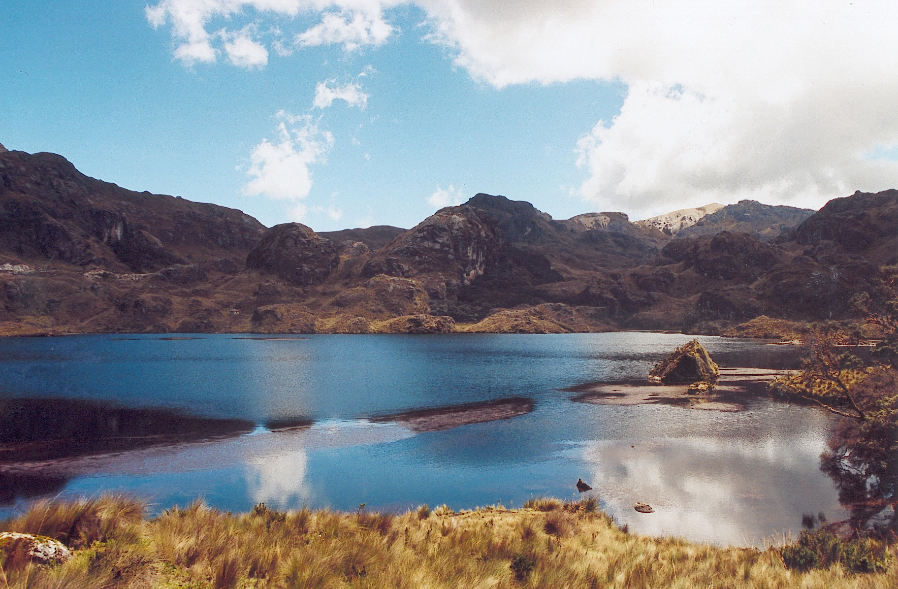

Lugares:
Catedral de Cuenca: La Catedral se ubica en Mariscal Sucre,Benigno Malo,Cuenca.Esta es una iglesia catolica de estilo renacentista(gotico) se construyo durante un periodo de 100 años y cada dia abre sus puertas a multiples turistas y devotos de la ciudad. Parque Nacional Cajas: El parque Cajas es una zona protegida ubicada en los Andes(sur).Cuenta con una rica diversidad en flora y fauna ,como:bosque de neblina montano alto ,orquideas ,helechos ,musgos,venados de cola blanca ,oso de anteojos ,puma ,llama ,tucan,entre otros. De Cuenca toma aproximadamente 40 min llegar a este lugar.Tambien cuenta con senderos y la posibilidad de que puedas acampar ,senderismo ,pesca deportiva y escalada.  Catedral vieja de Cuenca: La Catedral vieja esta ubicada en la Calle Luis Cordero.Fue la sede en el siglo XVI para que los españoles hicieran su culto,pero hoy en dia funciona como museo de arte religioso.Ademas es Patrimonio de la Humanidad de la Unesco. Museo Pumapungo: El Museo esta ubicado en calle Larga.Este lugar es Patrimonio Cultural de la Humanidad.En este lugar podemos encontrar arte,arqueologia,audiovisuales,esculturas,lugares del Ecuador,comunidades del Ecuador por provincias,un mini zoologico (donde se encuentran algunas especies de aves). Mirador El Turi: El mirador se encuentra al oeste de Cuenca.Desde este lugar podemos apresiar la ciudad en tu totalidad.Este lugar cuenta con una iglesia llamada Nuestra Señora de la Merced,tambien cuenta con un pequeño parque ,que cuenta con un columpio, cuerdas y otras actividades recreativas. Museo del Sombrero de Paja Toquilla: Este museo se ubica en Padre Aguirre y Calle Larga.Este lugar tiene mucha importancia ,aqui se fabrica el sombrero de paja Toquilla ,producto 100% ecuatoriano.Este sombrero se hace a mano por artesanos ecuatorianos y es un producto digno de conocer y comprar.